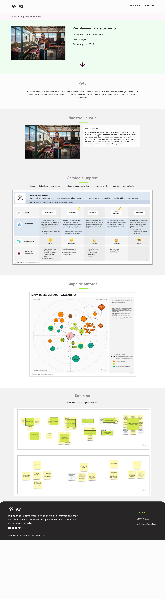

El reto
Para AMA Sacred Valley (cliente Agros), lideré la investigación para identificar los roles y actores de la cadena productiva del sector textil de camélidos en la región Cusco, y entender cómo se interrelacionan en los distintos momentos del proceso productivo.
Service Designer — investigación y facilitación
Lideré research de campo: entrevistas, perfilamiento de usuario y construcción de los entregables de service design que documentaron el ecosistema completo de actores.
Service blueprint + mapa de ecosistema, no solo entrevistas
Diseñé y facilité entrevistas en campo con productores del Valle Sagrado, y construí un service blueprint y un mapa de ecosistema de actores (Patacancha) que documentó roles, relaciones y necesidades no evidentes a simple vista — el sistema aquí es el ecosistema de servicio, no componentes de UI.

Perfil de usuario (Juan, productor), service blueprint y mapa de ecosistema — Valle de Patacancha
Población rural de difícil acceso
El Valle Sagrado es una zona rural de difícil acceso — la mayor restricción logística del proyecto, que condicionó tiempos de campo y la cantidad de entrevistas posibles por jornada.
Insumo entregado, sin seguimiento del impacto final
Los hallazgos se entregaron como insumo a otro equipo para el diseño del servicio. No tuve seguimiento del impacto final, pero el entregable quedó documentado con la estructura necesaria para accionarse.